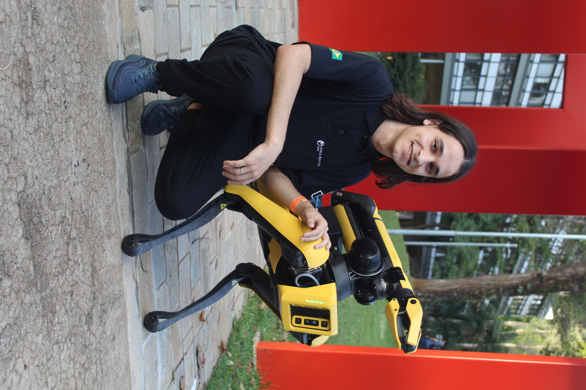

Estudante de Engenharia Mecatrônica & Pesquisador em Robótica
Sou estudante de Engenharia Mecatrônica na Universidade Federal de Uberlândia (UFU) e um apaixonado por robôs. Minha carreira acadêmica e profissional é dedicada a construir a próxima geração de sistemas robóticos inteligentes, com um foco especial em robôs móveis, como quadrúpedes e humanoides.
Meu grande interesse é atuar na interseção entre o controle de baixo nível e a inteligência de alto nível.
Lidero a Equipe de Desenvolvimento em Robótica Móvel (EDROM) da UFU, competindo em categorias como a RoboCup.
Desenvolvo pesquisas com quadrupedes e humanoides no Laboratório de Automação e Robótica da Universidade Federal de Uberlândia.
Colaboro com o Mobile Robotics Group da USP, com foco em controle de robôs quadrupedes.
Estou sempre aberto a novas ideias, projetos e oportunidades de colaboração.